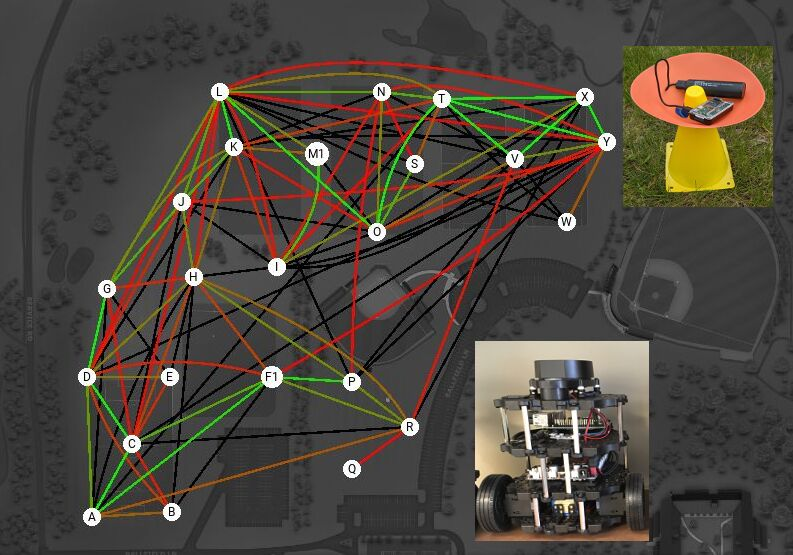
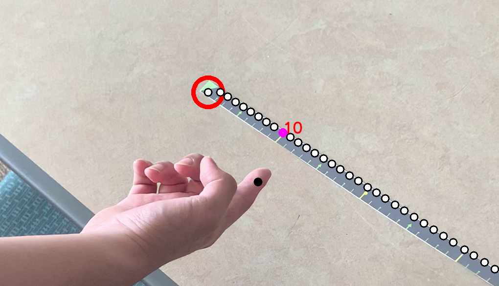
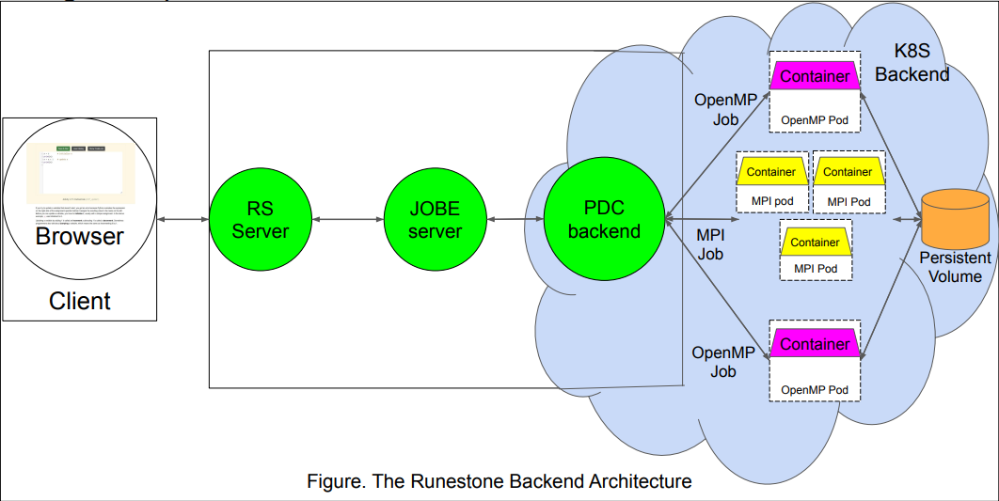
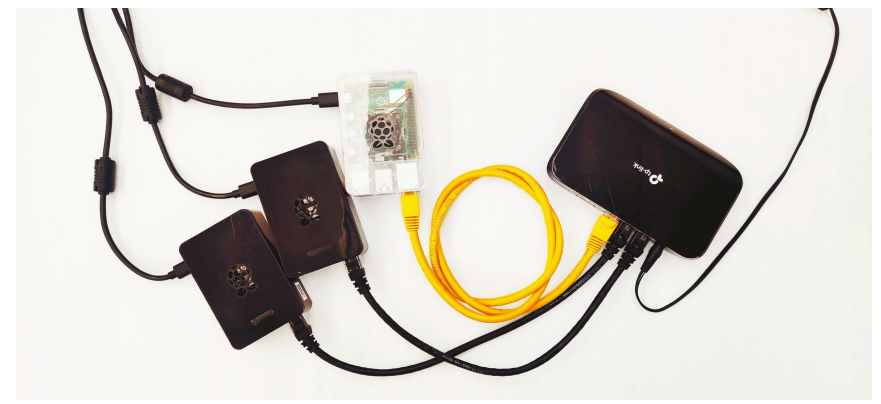

Paul Humke, and Khang Vo Huynh. "A Peano Coincidence". Journal of Mathematical Analysis and Applications, vol. 562 (2026), issue 1, https://www.sciencedirect.com/science/article/pii/S0022247X26002696.
Research Portfolio
Khang Vo Huynh
I am an international student from Viet Nam and a Computer Science Ph.D. student at The University of Virginia - Charlottesville (UVA), after graduating from St. Olaf College.
My work is centered on reliable, robust, and adaptive AI-enabled cyber-physical systems, with deep interests in Formal Methods theory and application in Controller Synthesis, Large Language Mode, and Vision Language Action model. My research specific focuses in enabling AI models to have safety reasoning as well as creating framework to monitor safety issues in deploying such systems.
Last update: April 2026
Research Interest
Building safe and trusthworthy cyber-physical systems
My research interests are in building cyber-physical systems, mostly AI systems, that are reliable, robust, and adaptive. More specifically, I am interested in utilizing formal methods theory and framework such as DSL, probabilistic model checking to enhance the safety reasoning in AI models and how these tools can improve the trust between users and AI-system outputs.

News & Updates
Recent research milestones
-
April 2026
"A Peano Coincidence" was published at Journal of Mathematical Analysis and Applications. [Co First-Author]
-
December 2025
Preprint version of the paper "Optimization-Based Robust Permissive Synthesis for Interval MDPs" is available on ArXiv. [First Author]
-
June 2023
"Efficiently Filling Space" was published at Rocky Mountain Journal of Mathematics. [Co First-author]
-
2022
Delivered a presentation, titled "Strategic Awareness of Surroundings to Reduce Network Disruption while Maximizing Coverage in Multi-Robot Exploration", at Midstates Physical Sciences, Math and Computer Science Undergraduate Research Symposium 2022.
-
2022
Presented a poster, titled "Cloud-powered PDC Computations For a Runestone Interactive Textbook", at Midstates Physical Sciences, Math and Computer Science Undergraduate Research Symposium 2022.
-
July 2022
"Finding the Keys to Peano Curve" was published at Acta Mathematica Hungarica. [Co First-author]
-
2022
Presented my work, "Finding the Keys to Peano Curve", at 22nd Annual Mathematics on the Northern Plains.
Publications
List of publications
If not mentioned, entries indicate co-authorship.
Khang Vo Huynh, David Parker, and Lu Feng. "Optimization-Based Robust Controller Synthesis for Interval MDPs". Preprint, https://arxiv.org/abs/2510.03481
Paul Humke, Khang Vo Huynh, and Thong Vo. "Efficiently Filling Space". The Rocky Mountain Journal of Mathematics, vol. 53 (2023), no. 2, June 2023, pp. 477-484, https://www.doi.org/rmj.2023.53-2.
Paul Humke, and Khang Vo Huynh. "Finding Keys to the Peano Curve." Acta Mathematica Hungarica, vol. 167, no. 1, 5 July 2022, pp. 255-277, https://doi.org/10.1007/s10474-022-01242-1.
Full List of Projects
Other Projects
Here, you will find the full list of projects that I have done throughout my entire career. I ordered them based on the timeline of when I started them, from right to left. Click on the Details button if you would like to find more information.

Robotics and networking
Multi-Robot Exploration and Communication
Behavioral model for multi-robotics system in networking-constraint environment.
Details
Computer vision
Senior Capstone Project
Computer vision system that supports the study of numberline for kindergarten students in Ghana and Northfield, MN, USA.
Details
Cloud systems
Cloud-powered PDC Computations for a Runestone Interactive Textbook
Construction of a backend using cloud technology that supports the learning process of parallel and distributed computing for undergraduate students.
Details
Distributed computing
Self-organizing Raspberry Pi Clusters
Constructing Raspberry Pi Operating System images that are capable of parallel and distributed computing using PiGen.
DetailsRemark
Thank you for visiting
Thank you so much for visiting my website. I try to capture everything that I could possibly fit in a single website, but sometimes it could not showcase all of my personality or other aspects of my life. I often update the website with news regarding my journey to become a better researcher. If there is any collaboration chance that you think could be a good fit for me, please do not hesitate to contact me through the links in the footer section of the website.